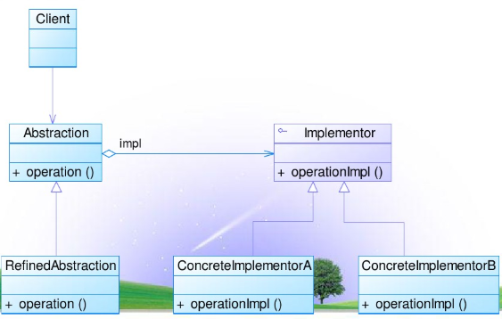
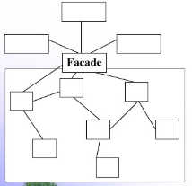

引言
结构型模式主要涉及如何组合各种对象以便于获得更好、更灵活的结构。虽然面向对象的继承机制提供了最基本的子类扩展父类的功能，但结构型更多地通过组合与运行期的动态组合实现更灵活的功能。
将类和对象结合形成更大的结构，类似于堆积木。
💥适配器模式（Adapter）
将一个类的接口转换成客户希望的另一个接口，使得原本由于接口不兼容而不能一起工作的类一起工作。
模式定义
适配器的实现就是把客户类的请求转化为对适配者的相应接口的调用。
模式结构
🎏类适配器
🎏对象适配器
具体实例
编写一个Adapter的步骤如下：
1. 适配器实现目标接口（interface）
2. 内部持有一个待转换接口的引用
3. 在目标接口的实现方法内部，调用待转换接口的方法
1 | public BAdapter implements B { |
只有A、B接口均为抽象接口调用时，才能简单地实现Adapter模式。
模式分析（优缺点）
优点：
- 类适配器，可以在适配器类种置换一些适配者的方法，使得适配器的灵活性更强。
- 对象适配器，同一个适配器可以把适配者类和它的子类都适配到目标接口。
缺点：
- 类适配器，由于Java、C#等不支持多重继承，一次只能适配一个适配者类，且必须是抽象者类，（对象适配器就不需要）；
- 对象适配器，想要置换适配者类的方法不容易。
应用举例
JDBC驱动软件是介于JDBC接口和数据库引擎接口之间的适配器软件。- 在Spring AOP框架中，对
BeforeAdvice，AfterAdvice，ThrowsAdvice三种通知类借助适配器模式实现
桥接模式（Bridge）
将抽象部分与它的实现部分分离，使它们都可以独立地变化。
模型定义
重点：抽象化and实现化
抽象化：将对象的共同性质抽取出来形成类的过程；
实现化：针对抽象化给出具体实现；
解耦：将抽象角色和实现角色的继承关系改为关联关系。
模型结构

桥接模式包含角色：
Abstraction：抽象类RefinedAbstraction：扩展抽象类Implementor：实现类接口ConcreteImplementor：具体实现类
具体实例
1 | ┌───────────┐ |
- 定义一个抽象类
Car，引用一个实现类接口Engine
1 | public abstract class Car { |
- 实现类接口
Engine的定义：
1 | public interface Engine { |
- 扩展抽象类
RefinedCar中定义额外的操作
1 | public abstract class RefinedCar extends Car { |
- 不同具体类继承来自扩展抽象类，如
BoosCar
1 | public class BossCar extends RefinedCar { |
- 对于实现类
Engine，通过implement实现不同具体子类，如HybridEngine()
1 | public class HybridEngine implements Engine { |
- 测试类中，构建
1 | RefinedCar car = new BossCar(new HybridEngine()); |
模式分析
桥接就体现在修正抽象类继承实现类（接口）的上。这样 任何RefinedCar的子类都可以和任何一种Engine自由组合，即一辆汽车的两个维度：品牌和引擎都可以独立地变化。
总结：不要过度使用继承，应该优先拆分某些部件，然后通过组合的方式来扩展功能。
💥组合模式（Composite）
将对象组合成树形结构以表示”部分-整体“的层次结构，使得用户对单个对象和组合对象的使用具有一致性。
模式定义
将容器对象和叶子对象进行递归组合，使得用户在使用时无须对它们进行区分，可以一致地对待容器对象和叶子对象。
模式结构
Component：抽象构件
Leaf：叶子构件
Composite：容器构件
Client：客户类
实际引用：
1 | ... |
💥装饰模式（Decorator）
给一个类或对象增加行为的两种方式：
- 继承机制：静态增加，通过子类继承父类的基础上增加自己的方法。
- 关联机制：装饰器模式，动态增加，将要扩展的对象嵌入到另一个对象里，由对象本身决定是否调用来扩展自己的行为。
模型定义
动态地给一个对象添加一些额外的职责。
具体实例
1 | ┌───────────┐ |
Component：抽象构件
ConcreteComponent：具体构件
Decorator：抽象装饰类
ConcreteDecorator：具体装饰类
具体实例
假设我们需要渲染一个HTML的文本，但是文本还可以附加一些效果，比如加粗、变斜体、加下划线等。为了实现动态附加效果，可以采用Decorator模式 。
- 顶层接口（Component）
TextNode：
1 | public interface TextNode { |
- 增加核心功能的具体构件（ComcreteComponent）的
spanNode
1 | public class SpanNode implements TextNode { |
- 用于增加附加功能的（Decorator）,其核心是
TextNode，即要把附加功能加到TextNode实例
1 | public abstract class NodeDecorator implements TextNode { |
- 具体的装饰类，增加一个加粗功能
1 | public class BoldDecorator extends NodeDecorator { |
- 具体测试用例
1 | ... |
总结
使用Decorator模式，可以独立增加核心功能，也可以独立增加附加功能，二者互不影响；
可以在运行期动态地给核心功能增加任意个附加功能。
外观模式（Facade）
用户只需直接与外观角色交互，用户与子系统之间的复杂关系由外观角色来实现。

模式定义
客户端只跟中介打交道，中介（Facade）跟各个系统打交道，这样对于客户端简单一点。
具体实例
1、以一个项目开发背景举例，对于甲方爸爸Demand（Client）提出的需求，由项目长Leader（Facade）与之谈洽，
2、再由项目长告知开发人员Develop（subSystemA）开发，
3、开发完毕，有项目长告知测试人员Tester（subSystemB）应有需求。
- 子系统类A 测试
1 | /** |
- 子系统类B 开发
1 | /** |
- 外观角色
FacadeLeader
1 | /** |
- 客户端 Demand
1 | /** |
- 具体应用
1 | ... |
小结
Facade模式是为了给客户端提供一个统一入口，并对外屏蔽内部子系统的调用细节。
享元模式（Flyweight）
当对象数量太多时，将导致运行代价过高，带来的性能下降等问题。享元就是为了解决这类问题的。
模式定义
享元模式通过共享技术实现相同或相似对象的重用。
核心思想：如果一个的对象被创建了，那么就不应该反复创建相同的实例了，直接回调一个共享的实例即可，这样既节省内存，又可以减少创建对象的过程。
模式分析
内部状态：可以共享的相同内容；
外部状态：需要外部环境来设置的不能共享的内容称为外部状态；
享元模式需要配合工厂模式，创建一个享元工厂来负责维护一个享元池（Flyweight Pool）用来存储具有相同内部状态的享元对象。
模式结构
if(flyweights.containsKey(key)){
return (Flyweight)flyweights.get(key);
}else{
Flyweight fw = new ConcreteFlyweight();
flyweights.put(key,fw);
}
Flyweight：抽象享元类
ConcreteFlyweight：具体享元类
UnsharedConcreteFlyweight ：非共享具体享元类
FlyweightFactory：享元工厂
享元工厂核心代码
1 | public class FlyweightFactory{ |
💥代理模式（Proxy）
通过代理对象去掉客户不能看到的内容和服务或者添加客户需要的额外服务。
模式定义
为某一个对象提供一个代理，并由代理对象控制对原对象的引用。
（静态）代理
重点在于代理类Proxy里面引用了RealSubject实例，在重写相同的request的方法前，可以增加实现响应之前和响应之后操作方法preRequest和postRequest；并在request方面里面进行调用这两个方法。
1 | ... |
执行结果：
preRequest()
realRequest.request();
postRequest()
模式分析（优缺点）
优点：
- 协调调用者和被调用者，在一定程度上降低了系统的耦合性
- 远程代理使得客户端可以访问远程机器上的对象
- 虚拟代理通过一个小对象来代表一个大对象，可减少系统资源消耗，对系统进行优化并提高运行速度
- 保护代理可控制对真实对象的使用权限
缺点：
- 因为多了一层，所以有些类型的代理模式的请求处理速度会很慢
- 实现代理模式需要额外的工作，有的代理模式实现非常复杂
模式适用环境
- 根据使用目的
- 远程代理： 本地的调用者持有的接口实际上是一个代理，这个代理负责把对接口的方法访问转换成远程调用，然后返回结果。Java内置的RMI机制就是一个完整的远程代理模式。
- 虚代理： 它让调用者先持有一个代理对象，但真正的对象尚未创建。如果没有必要，这个真正的对象是不会被创建的，直到客户端需要真的必须调用时，才创建真正的对象。 DBC的连接池返回的JDBC连接（Connection对象）就可以是一个虚代理，即获取连接时根本没有任何实际的数据库连接，直到第一次执行JDBC查询或更新操作时，才真正创建实际的JDBC连接。
- 保护代理： 它用代理对象控制对原始对象的访问，常用于鉴权。
- 智能引用： 是一种代理对象，如果有很多客户端对它进行访问，通过内部的计数器可以在外部调用者都不使用后自动释放它。